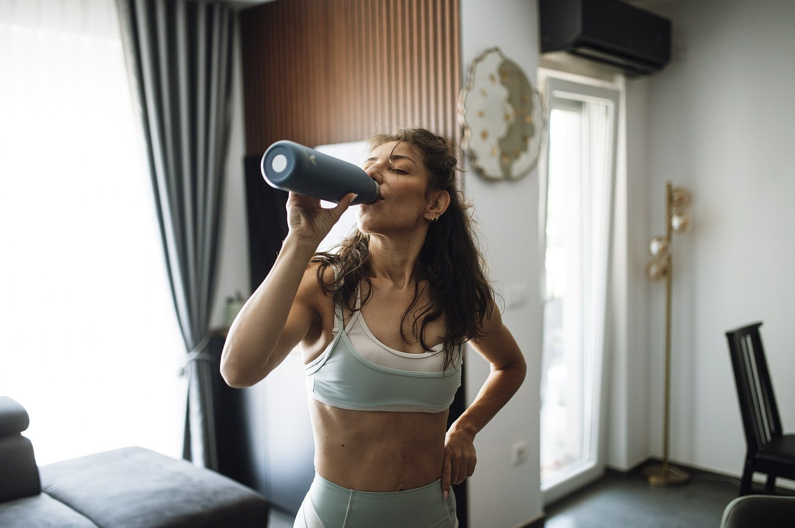
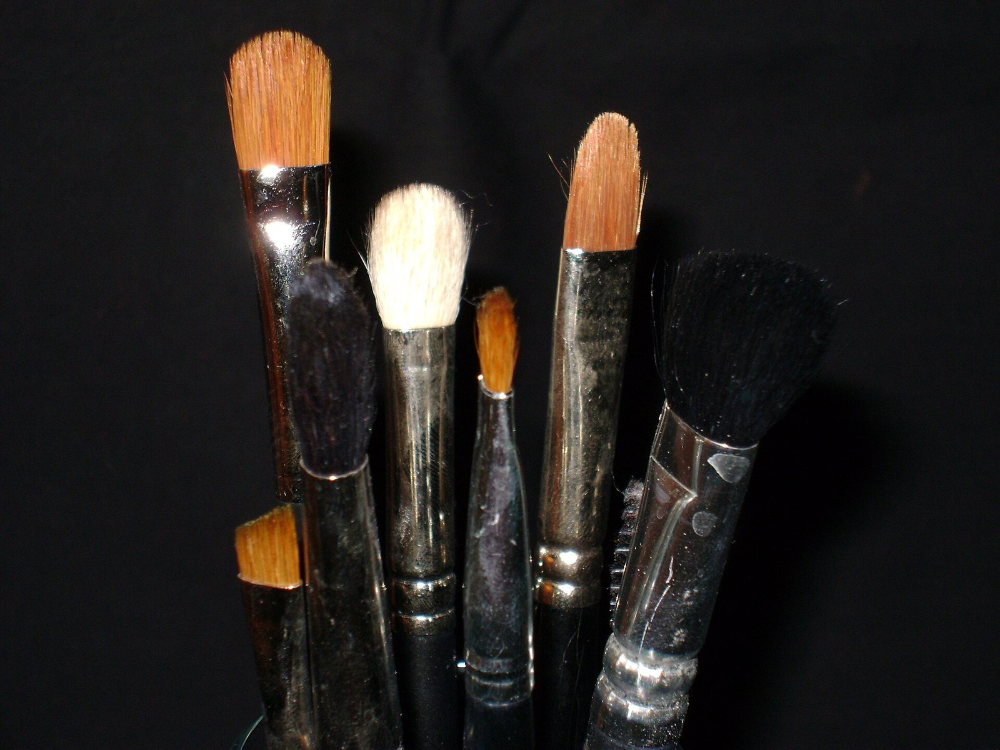

Базовый уход за кожей: с чего начать
Зачем нужен базовый уход Кожа — самый большой орган тела, и ей не требуется десять шагов утренней рутины. Достаточно стабильного набора из трёх-четырёх…
Зачем нужен базовый уход Кожа — самый большой орган тела, и ей не требуется десять шагов утренней рутины. Достаточно стабильного набора из трёх-четырёх…
Тип кожи — отправная точка при выборе крема. Ошибка здесь стоит дорого: плотный крем для сухой кожи забивает поры жирной, а лёгкий гель не спасает от…

Определите цель, а не «идеал из соцсетей» Фигура меняется под конкретную задачу: снизить процент жира, набрать мышцы, подтянуть осанку или просто вернуть…

Как отличить работающий бюджетник от пустышки Цена до 500–700 рублей не означает плохой состав. Смотрите на три вещи: активные компоненты в начале списка (не…